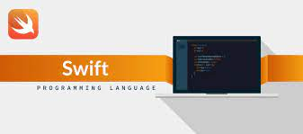

Which programming language should I learn?
This common question is something that stumps everyone first considering getting into programming or coding. This simple quiz may help you make the decision- or learn more about which languages you may want to consider! Let's get into it:
Swift
You should consider Swift! According to their website, Swift is a robust and intuitive programming language created by Apple for building apps for iOS, Mac, Apple TV, and Apple Watch. It's designed to give developers more freedom than ever. Swift is easy to use and open source, so anyone with an idea can create something incredible.
What does that really mean? Learning Swift will help position you to develop mobile apps primarily for iPhone/Mac products.
JavaScript
You should consider JavaScript! According to Wikipedia, 97% of all websites use JavaScript. It's a language required to pretty much anything on the web, so learning it is pretty key to getting into the tech industry. If you're not sure about whether or not you want to get in to the front end or back end of programming, committing to JavaScript will allow you the flexibilty to specialize later- or be a generalist.
Python

You should consider Python! Python is an interpreted high-level general-purpose programming language. Its design philosophy emphasizes code readability with its use of significant indentation. Its language constructs as well as its object-oriented approach aim to help programmers write clear, logical code for small and large-scale projects.
So what does that mean? It is easy to learn and is simple and powerful. It may not be very good at making attractive webpages, but it is very useful when sorting through data or automating tasks. Frequently used in data science and machine learning, Python is a great tool for people who like solving problems or working with data.
Also, between us, clean up your room and take a shower. Being good at fixing stuff doesn't give you a free pass on lack of organization or hygene.